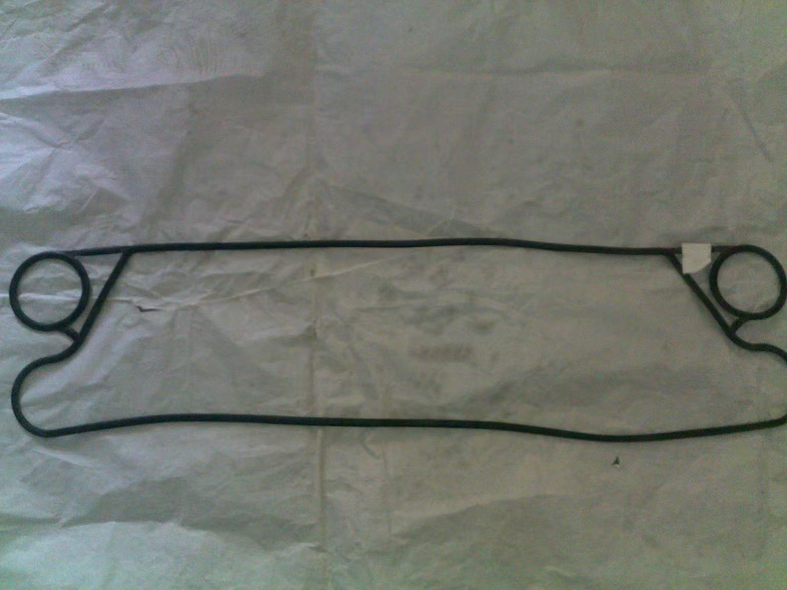

Vicarb Plate Heat Exchanger Model Guide
About Vicarb
Vicarb is a renowned French heat exchanger brand, known for exquisite French manufacturing craftsmanship and excellent sealing technology. Products are widely used in food, pharmaceutical, and other industries with high sanitary requirements.

Main Model Series
1. V Series
V4, V7, V8, V13, V20, V28, V45, V60, V85, V100, V110, V130, V170, V180, V280
The V Series is Vicarb's standard product line, covering a wide application range from the micro V4 to the large V280. V13 is a commonly used small-to-medium model, while V130 is a large industrial-grade unit.
Selection Recommendations
When selecting a Vicarb plate heat exchanger, consider the following factors:
- Flow Rate & Heat Load: Choose the appropriate model tier based on processing capacity and heat exchange requirements
- Media Characteristics: Select corresponding plate materials (316L, titanium alloy, etc.) for corrosive media
- Installation Space: Choose compact or standard models based on site constraints
- Maintenance Convenience: Consider disassembly, cleaning frequency, and operational space
We recommend consulting Vicarb or their authorized distributors before selection for the latest technical specifications and selection support.
Summary
Vicarb offers a comprehensive range of plate heat exchanger models from micro to large industrial applications. The models listed in this article serve as a quick reference. Actual projects require detailed selection calculations based on specific operating conditions. For spare parts procurement or model replacement, please provide the original nameplate information, and we will quickly match the corresponding product for you.